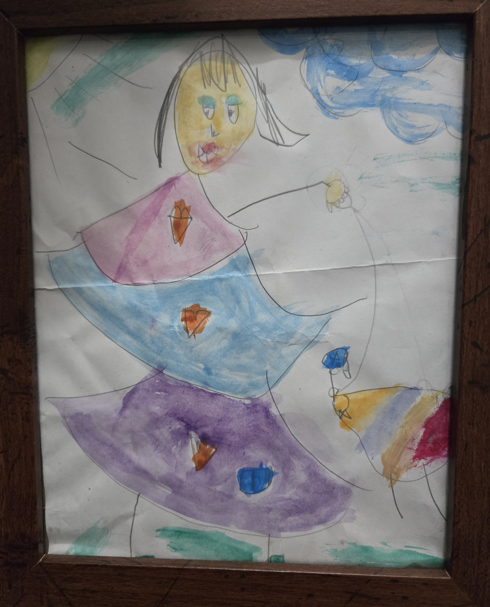
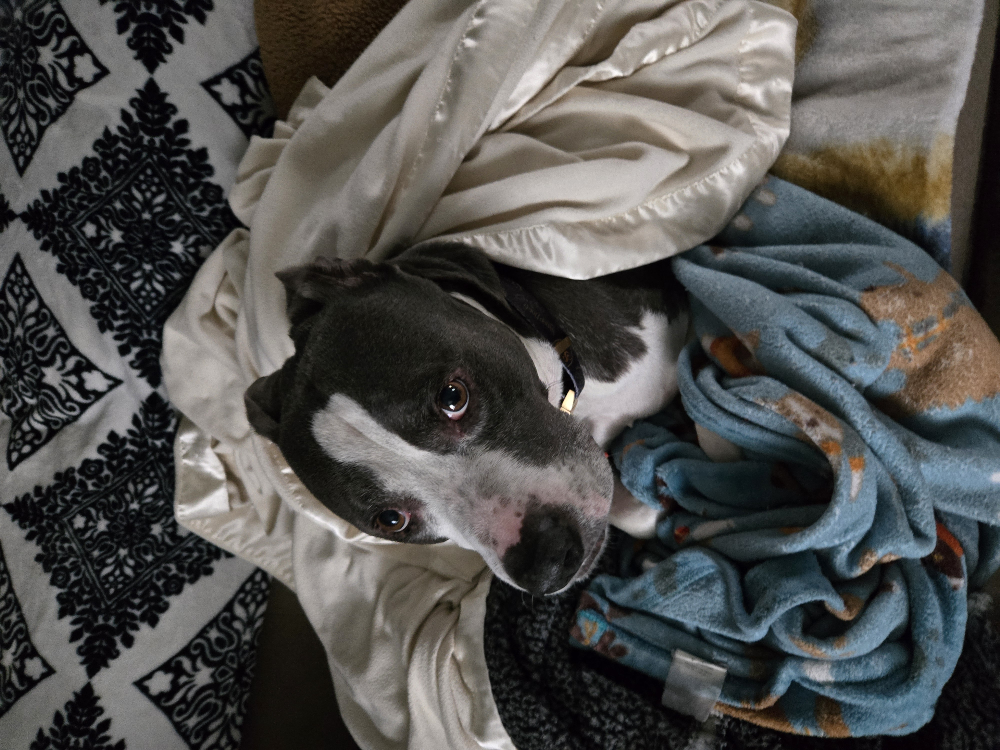

Warning: This page includes grounding tools and sensory practices that may touch on, or evoke, emotional experiences. Please proceed with care.
About Breakpo!nt
A 'Sanity Kit' birthed from personal survival, built for collective healing.
RECCOMENDATION: Before you begin, it may be useful to find a bin, small container, or even a tray to place items of comfort.
How Will You Fill Your JoyBox?
Choosing joy can look like personalizing a collection of tools that help ground you in the present moment using senses. These small, meaningful items can live in a box, a tray, a drawer - wherever you feel safe keeping them.
This is a practice in self-compassion, rooted in sensory experience, and it evolves with you.
These ideas are flexible and inclusive. Each card includes an accessible alternative for different abilities—because grounding should be available to every body and every journey.
Sight
Choose a comforting visual—like a photo, art, or natural scene—that brings peace.
For Example:
- 

- 
Accessibility Alternative: If you're blind or low vision, try objects that evoke visualization through texture or verbal description. For example, use a tactile object you associate with a memory, or an audio description of a meaningful place.
Visit Perkins School for the Blind to Explore Some Ideas
Sound
Calming music, nature sounds, or a playlist can help shift your emotional state.
For Example:
.png)
.png)
Accessibility Alternative: If you're Deaf or hard of hearing, try rhythmic sensations instead—like feeling the beat of music through touch, using vibration, or reading meaningful lyrics or poetry aloud (or with screen reader support).
Check out the Apple Plylist Created by and for Deaf Persons
Smell
Include a favorite scent—like essential oils, coffee beans, or herbs.
For Example:
.webp)

Accessibility Alternative: If you have limited or no sense of smell, try associating objects with memory or comfort (e.g., a soft item that reminds you of someone or something familiar).
This Article Offers Some Ideas
Taste
A favorite tea, chocolate, mint, or fruit can offer a calming anchor.
For Example:
.jpeg)
Accessibility Alternative: If you have restrictions with taste, try simulating comfort through oral texture (e.g., a warm drink, or even mindful breathing exercises with attention to the mouth and throat).
A Blog byHarklaOffers Some Options
Touch
Include textured objects like soft fabric, stones, or something weighted.
For Example:


Accessibility Alternative: If you have limited mobility or nerve sensation, focus on visualizing safe textures or noticing internal sensations, such as heartbeat or breath. Weighted items placed on the body can also create comfort without active touch.
A Blog by Harkla Offers Options